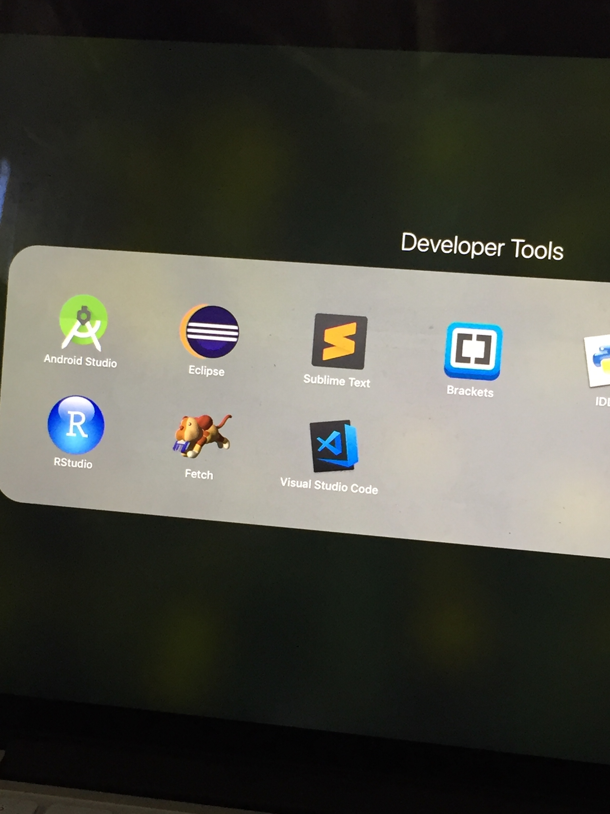

Responsive Design
In order for a product to really have great and responsive design, it needs to both have good desktop and mobile design. You must be very detailed and design-oriented about your information and pictures on mobile, since the screen is small. More content can go on a page without any use interaction on a desktop, as you can use columns, giving flexibility for designing layouts and UI elements. Often software, such as Photoshop, is most useable on desktop, as there’s the space to really hold all the information and is most useful for the user. Right now, as it’s clear to see, mobile use lacks functionality, but there are so many innovations happening in mobile design -- that things can change in 10 or so years.
Because the classwork I often have depends on the web, I’m forced to rely on it every second. I’m in the field of Computer Science, so of course, my entire future and studies are based on the internet / how to build off that! I use my phone when I’m not doing full work or need any software, or if I’m just planning on talking to people. It’s obviously more difficult to see on the phone, yet the computer is so large and heavy to carry -- I think that it’s a tradeoff. I’ve often seen people use tablets to take notes in class, which I think is a great idea and thus uploads notes onto the cloud for future use.
